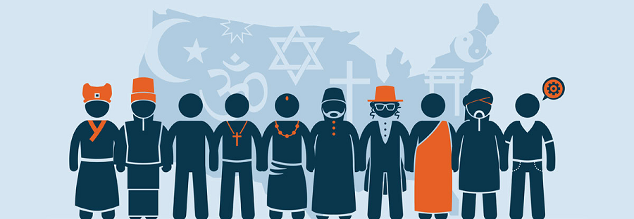

Seja bem vindo a um site de conhecimento

Para conceituar o Pluralismo Religioso precisamos voltar no tempo e fazer uma análise do Secularismo. O fenômeno do Secularismo se caracteriza quando o monopólio religioso deixa de existir e as diversidades de religiões passam a ser aceitas nassociedades em que o Estado é laico. Estado Laico é quando um país se declara neutro e imparcial em relação aos assuntos religiosos, sem apoiar ou discriminar qualquer religião. Mas voltando ao Secularismo, podemos afirmar que por volta do Séc. XIX foi quando a decadência das instituições religiosas se tornou mais expressiva. O enfraquecimento da religião foi resultado da desvalorização de crenças e valores. As religiões tradicionais perderam a influência, perderam membros e prestigio junto à sociedade. Esse processo está intimamente ligado à modernidade, quando o homem procura entender o mundo através da razão, e não pelos mitos da religião. Nas relações da Igreja com o Estado, podemos dizer que a Secularização é o processo de devolução de algo que, por razões de ordem histórica, estava submetido ao domínio religioso. A Secularização aconteceu entre os fiéis e o próprio clero, que passou a ter dificuldades para desenvolver e manter as instituições religiosas. Pode-se afirmar que várias causas desse processo de declínio foram relatadas por alguns estudiosos. Mas as principais são:
1) o prestígio à ciência que mostra uma nova visão científica do mundo; 2) a modernidade; elemento crucial que a religião insiste em não acompanhar, causando o afastamento de fiéis e atingindo em cheio a vida familiar e as tradições.Então, a modernidade viabiliza o surgimento do Pluralismo Religioso, oferecendo o diálogo, a compreensão e o respeito entre ideias e pensamentos diferentes. Uma sociedade plural tem liberdade para manifestar suas crenças e assumir assim a identidade religiosa de cada indivíduo, proporcionando a tolerância e o respeito recíproco. A valorização da diversidade religiosa está no diálogo saudável em que as religiões externem suas verdades através do relacionamento humano e assim irão colaborar na construção de uma sociedade mais justa.